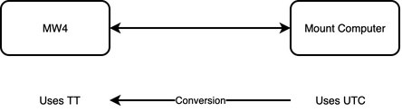

Handling time¶
One basic definition is that MW4 will use at any time the clock of the mount computer. Therefore MW4 polls julian date, difference utc - ut1, time sidereal. This allows full sync for any calculation to be made. No time from computer to mount is necessary, but could be done at any time (except during model build run). The mount mostly use the julian date representation except for model build where a local sidereal time (LST) is used. In this case MW4 just stores the value and feed it back when the model is programmed. That’s the reason why you should not change time during model run.
One important difference between MW4 and Mount exists. As I use skyfield as on of the frameworks with it’s units for Angle, Coords, Time etc. I have to take the time definition of skyfield into account. Skyfield chooses TT (Terrestrial Time) as it’s basic concept, whereas the mount uses UTC (Coordinated Universal Time) as reference. TT is a modern astronomical time standard defined by the International Astronomical Union. TT is distinct from the time scale often used as a basis for civil purposes, UTC. TT is indirectly the basis of UTC, via International Atomic Time (TAI).